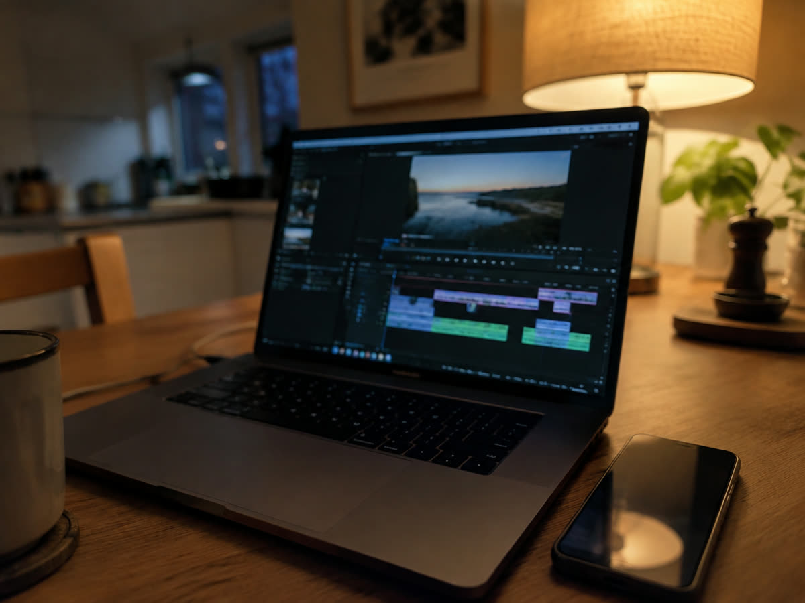
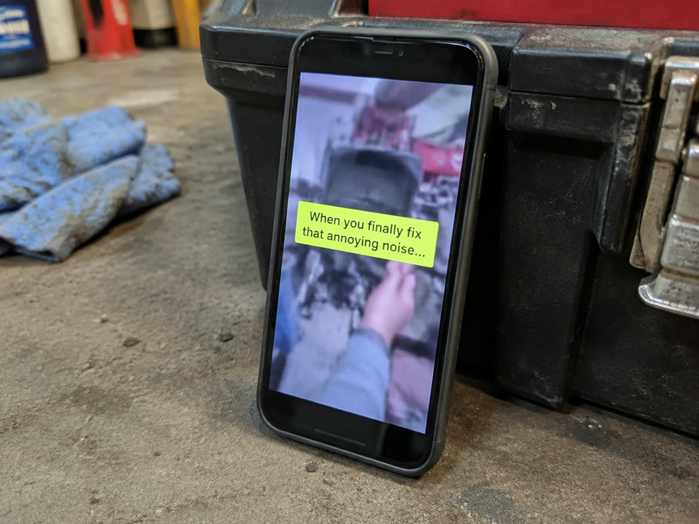

Untertitel in Reels: warum ohne sie die Hälfte nichts versteht
Zwischen siebzig und fünfundachtzig Prozent aller Aufrufe laufen ohne Ton. Ohne Untertitel ist das ein Video ohne Inhalt.
Die meisten Menschen sehen Kurzvideos ohne Ton. In der Bahn, im Wartezimmer, abends neben jemandem, der schon schläft, im Laden zwischen zwei Kunden. Je nach Erhebung laufen zwischen siebzig und fünfundachtzig Prozent aller Aufrufe stumm. Ein Video ohne Untertitel ist für diese Mehrheit ein Video ohne Inhalt.
Das ist der Grund, warum Untertitel keine Zusatzleistung sind, sondern Teil des Videos. Wer sie weglässt, verschenkt den größeren Teil der Reichweite, die er sich gerade erarbeitet hat.

Was automatische Untertitel leisten und wo sie scheitern
Instagram und TikTok erzeugen Untertitel auf Knopfdruck, und für Hochdeutsch in ruhiger Umgebung ist das Ergebnis brauchbar. Sobald aber Werkzeug läuft, mehrere Leute reden oder jemand Dialekt spricht, wird es unzuverlässig. Besonders betroffen sind Fachbegriffe, Produktnamen und Ortsnamen, also genau die Wörter, auf die es bei einem Betrieb ankommt.
Aus "Estrich" wird dann "Es trich", aus "Göppingen" wird irgendetwas, und aus einer Materialbezeichnung wird Unsinn. Das fällt dem Betrieb selbst kaum auf, weil er weiß, was gesagt wurde. Zuschauern fällt es sofort auf, und es wirkt nachlässig.
Die Lösung ist unspektakulär: automatisch erzeugen lassen und anschließend durchgehen. Das kostet pro Video ein bis zwei Minuten und erledigt das Problem vollständig. Bei uns gehört dieser Durchgang fest dazu, siehe Untertitel und Grafik.
Lesbarkeit entscheidet mehr als Gestaltung
Untertitel müssen unter schlechten Bedingungen lesbar sein: kleines Display, Sonnenlicht, unruhiger Hintergrund. Daraus folgen ein paar schlichte Regeln. Ausreichend groß, kräftiger Schriftschnitt, heller Text mit dunklem Hintergrund oder Schatten darunter. Zwei bis drei Wörter gleichzeitig, nicht ganze Sätze.
Entscheidend ist außerdem die Position. Am unteren Bildrand liegen die Bedienelemente der App, der Kontoname und der Begleittext. Untertitel, die dort sitzen, werden teilweise verdeckt. Sicher ist das mittlere Drittel, etwas oberhalb der Mitte. Wer dieselben Videos auf Instagram und TikTok veröffentlicht, sollte das prüfen, weil die Bedienelemente unterschiedlich liegen.
Dazu kommt der Rhythmus. Untertitel sollten auf das Wort treffen, das gerade gesprochen wird. Laufen sie vor oder nach, wirkt das Video unruhig, auch wenn der Zuschauer nicht benennen kann, woran es liegt.

Es geht nicht nur um stumme Zuschauer
Untertitel machen ein Video für gehörlose und schwerhörige Menschen überhaupt erst zugänglich. Das betrifft in Deutschland Millionen, und es ist ein Grund, der für sich allein ausreicht.
Dazu kommt ein praktischer Nebeneffekt: Beide Plattformen lesen eingeblendeten Text mit und nutzen ihn, um ein Video thematisch einzuordnen. Ein Video, in dem "Wallbox installieren" als Text erscheint, wird eher Menschen gezeigt, die sich dafür interessieren. Untertitel helfen also auch bei der Ausspielung, und sie tun es ohne zusätzlichen Aufwand.
Der Rest der Textebene
Untertitel sind nicht dasselbe wie Bewegtgrafik. Ein kurzer Hinweis auf eine Zahl, ein Pfeil auf ein Detail, eine eingeblendete Beschriftung eines Werkzeugs: Das erklärt etwas, das im Bild sonst untergeht. Richtig eingesetzt hält es Leute länger im Video, und genau daran misst die Plattform.
Falsch eingesetzt ist es Dekoration, die vom Inhalt ablenkt. Die Faustregel: Jede Einblendung muss eine Frage beantworten, die beim Zusehen entsteht. Alles andere kann weg.
Wie die ersten Sekunden aufgebaut sein müssen, damit überhaupt jemand bis zum Untertitel kommt, steht unter Die ersten zwei Sekunden. Den ersten Monat mit geschnittenen Videos samt geprüfter Untertitel können Sie kostenlos testen.


Lernen wir uns kennen.
15 Minuten am Telefon oder per Video. Danach wissen Sie, ob und wie Social Media für Ihren Betrieb funktioniert.